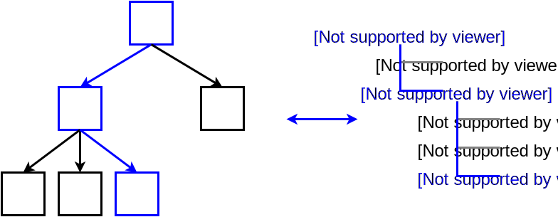

Front-end Empire State Building
Front-end
Empire
React
Redux
React
A JavaScript library for building user interfaces.
1. Deklaratywność
2. Wydajność
Virtual DOM

3. Komponenty


(props, state) => elementKomponent powinien mieć jedno źródło prawdy.
Stan komponentu powinien być
minimalną reprezentacją potencjalnych zmian.
minimalną reprezentacją potencjalnych zmian.
<SearchForm />


<SearchForm />
<Input />

<SuggestionsList />

<Suggestion />


Redux
Predictable state container for JavaScript apps.
Jedno źródło prawdy
Stan aplikacji jest jednym obiektem
Store
Stan jest read-only
Modyfikacja stanu następuje asynchronicznie
Akcja
Zmiana stanu nie powoduje efektów ubocznych
Modyfikację stanu opisuje funkcja
Reducer
Store


React
- Komponent powinien mieć jedno źródło prawdy.
- Stan komponentu powinien być
minimalną reprezentacją potencjalnych zmian.
Redux
- Akcja opisuje co się zmieniło.
- Reducer opisuje jak zmienić stan.
- Reducer może reagować na wiele akcji.
- Reducery można komponować.